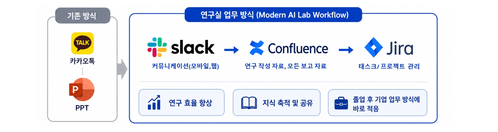

Contact
Get in Touch
Research collaboration, prospective student inquiries, and lab contact information
Notice
Notice
| Date | Title |
|---|---|
| 2026.07.01 |
[모집] 학부 연구생 모집 — Computer Vision / AI 관련 프로젝트
Computer Vision / AI 관련 프로젝트에 관심 있는 학부 연구생을 모집합니다. |
| 상시 |
[모집] 대학원 석/박사 과정 모집 — Computer Vision / AI 관련 프로젝트
석/박사 과정 진학 희망자는 관심 연구 분야와 연구 경험을 포함하여 이메일로 문의해 주세요. |
| 상시 |
연구실 업무 방식 (AI 기업형 연구실 업무 방식)
 |
Lab Information
LabVision AI Laboratory (VAI Lab)
Dept.Department of Artificial Intelligence & Data Science, Sejong University
Student OfficeRoom 319, Daeyang AI Center
Professor OfficeRoom 501, Daeyang AI Center
Address501, Daeyang AI Center, Department of Artificial Intelligence and Data Science, Sejong University
세종대학교 인공지능데이터사이언스학과, 대양AI센터 501호
세종대학교 인공지능데이터사이언스학과, 대양AI센터 501호
Tel+82-2-3408-3348